Como usar o Orientativo FC 3D
Você vai estudar as janelas e portas das linhas Suprema e Gold em 3D, peça por peça, e depois praticar: montar a esquadria em 3 níveis, lançar o pedido no WVetro e no CEM e ler o diagrama de dimensões (pressão de vento).
Login e senha: os da sua empresa (a FC passa para o gestor)
Seu nome: depois de entrar, toque no seu nome
Código pessoal: 4 números, só seu
Cada colaborador tem 72 horas corridas a partir do primeiro acesso, de segunda a sábado, em um aparelho por vez. O que você estuda e os desafios ficam guardados no seu nome.
Entrar
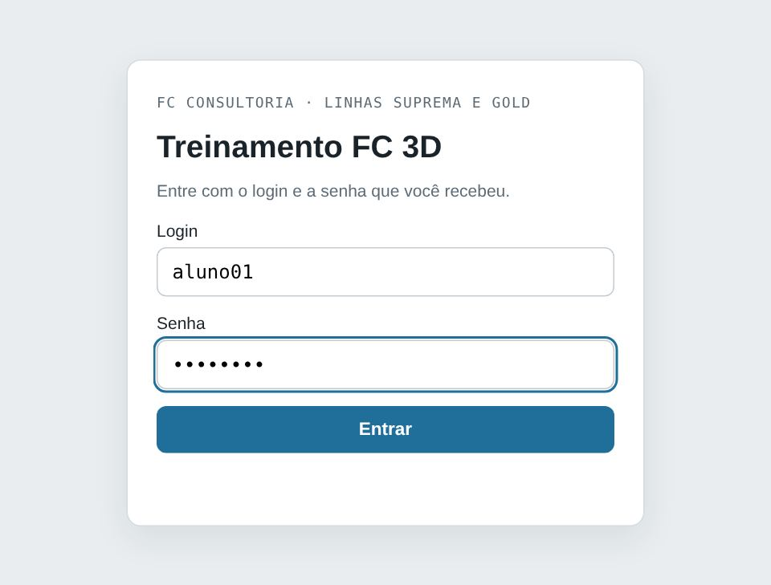
- Abra o link no navegador (Chrome, Edge ou Safari).
- Digite o Login e a Senha da sua empresa e toque em Entrar.
- Na tela Quem está estudando agora?, toque no seu nome.
- Digite seu código pessoal de 4 números (você recebeu da FC Consultoria).
- Seu nome aparece na barra escura no alto. Para trocar de pessoa, toque no nome. Para sair, Sair.
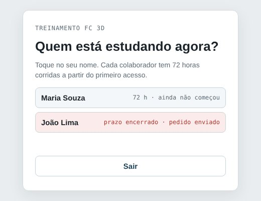
A tela
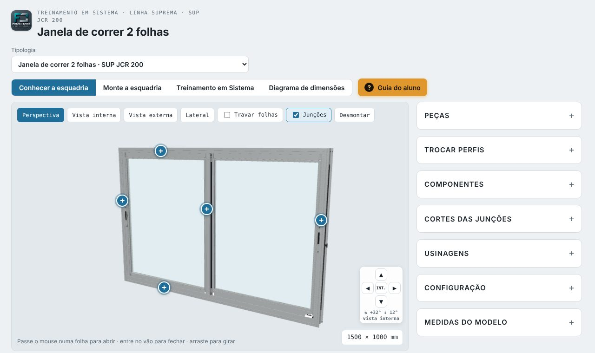
- 1 · Escolha a linha: Linha Suprema ou Linha Gold. 2 · Escolha a tipologia: a lista mostra só as esquadrias daquela linha (8 em cada).
- Conhecer a esquadria: para estudar.
- Monte a esquadria: o desafio de montar, em 3 níveis.
- Orientação em Sistema: lançamento no WVetro e no CEM.
- Diagrama de dimensões: pressão de vento e tamanho máximo.
- Dentro de um módulo, as outras abas somem e aparece ← Voltar ao início, que volta para Conhecer a esquadria.
- 📢 Divulgação: de tempos em tempos aparece uma novidade da FC no meio da tela. Dá para baixar, imprimir ou tocar em Tenho interesse. Ela nunca abre durante um desafio, e o botão 📢 na barra escura mostra de novo.
- Na barra escura: 📘 Catálogos, Dúvidas e sugestões, Guia do aluno e Sair.
- Embaixo, à direita, a medida da esquadria.
Conhecer a esquadria
Gire, abra as folhas, desmonte e veja os cortes. Nada aqui vale nota: é para explorar à vontade.
- Girar: arraste com o mouse ou com um dedo. Zoom: rodinha do mouse ou dois dedos.
- Setas no canto ▲ ◀ ▶ ▼: giram 15° e inclinam 10° por toque. INT. volta de frente.
- Perspectiva, Vista interna, Vista externa, Lateral: vistas prontas. Vista interna é olhando de dentro da casa.
- Travar folhas deixa as folhas paradas. Junções mostra ou esconde os botões +.
- Abrir as folhas: passe o mouse na folha, ou use o controle de abertura no painel.
- Desmontar: separa as peças como um quebra-cabeça. Montar junta de novo.

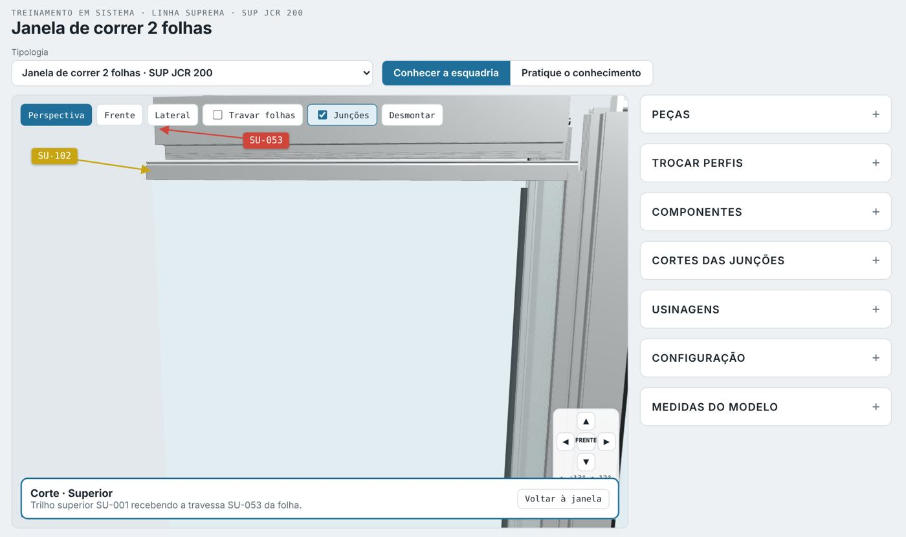
- Os botões + na janela abrem o corte daquela junção, igual ao desenho do catálogo.
- Também pelo painel Cortes das junções.
- Voltar à janela sai do corte.
- Na Porta com persiana (linha Gold), o botão Só a persiana mostra a caixa transparente e as lâminas enrolando no eixo.
- Pausar para parar o movimento.
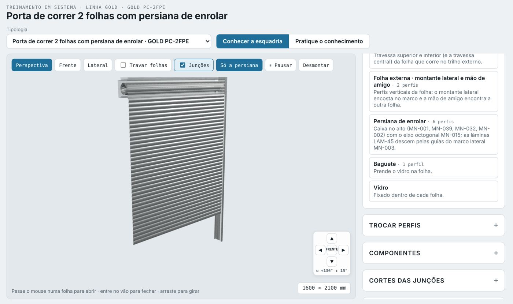
Peças e perfis

- Abra Peças e toque num grupo: marco, trilho, folha interna (travessas / montante lateral e mão de amigo), folha externa, baguete.
- A peça ganha cor na janela e aparece o código do perfil.
- Toque no código para ver o Perfil em 3D.
- Em Buscar perfil, digite só o número (ex.: 053).
- O Perfil em 3D mostra a peça sozinha, com nome e para que serve.
- Gire a peça com o dedo ou com as setinhas no canto. 0° volta à posição inicial.
- Trocar este perfil: quando o catálogo tem outra opção para aquela posição, ela aparece embaixo. Toque para trocar e ver como fica na janela.
- ← Voltar fecha o perfil e volta para a esquadria inteira.
- Mais painéis: Trocar perfis (opções do catálogo), Componentes, Usinagens e Configuração (medida, vidro e cor do alumínio: Branco, Preto fosco, Bronze, Natural, Cerejeira Real, Aço Corten e Linheiro Real).

Monte a esquadria
Toque em Monte a esquadria e arraste cada perfil do painel até o lugar certo na janela. Acertou, a peça ganha cor e se encaixa. São 3 níveis por tipologia: o próximo libera quando você vai bem no anterior.
1Montada
A esquadria está montada. Passe o mouse para ver o nome de cada peça e arraste o perfil certo.
2Desmontada
Quebra-cabeça: as peças ficam separadas. Libera com 70% ou mais no Nível 1 da tipologia.
3Especialista
O painel mostra só a seção do perfil, sem o nome. Libera com 3 estrelas no Nível 2.
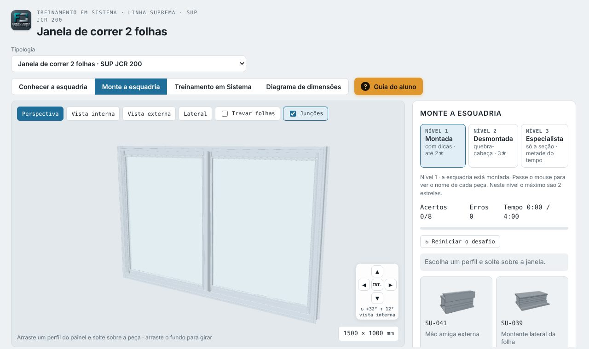
- Escolha o nível. Os níveis travados mostram o cadeado e o que falta para liberar.
- Arraste um perfil do painel e solte sobre a peça certa.
- Errou? Aparece uma dica do porquê. Tente de novo.
- O tempo começa no primeiro perfil. Encaixe tudo antes do limite.
- No fim aparecem as estrelas, a % de acerto e o seu recorde. Se liberou o próximo nível, o botão Ir para o Nível leva direto.


Orientação em Sistema
Toque em Orientação em Sistema e escolha Lançamento no WVetro ou Lançamento no CEM. A tipologia do desafio é a SUP JCR 200 (janela de correr 2 folhas). Aparece quando o sistema está incluído no orientativo da sua empresa.
Lançamento no WVetro
- Leia o Pedido do cliente no alto do painel.
- 1 · Dados do projeto: quantidade, largura, altura, cores, vidro, contramarco e arremate.
- Toque em Avançar para as variáveis.
- 2 · Variáveis: responda cada pergunta como no WVetro. A peça escolhida aparece em 3D logo abaixo.
- Ver no 3D leva a câmera até a peça na janela.
- Conferir respostas mostra o que acertou e o que errou. Nova simulação traz outro pedido.
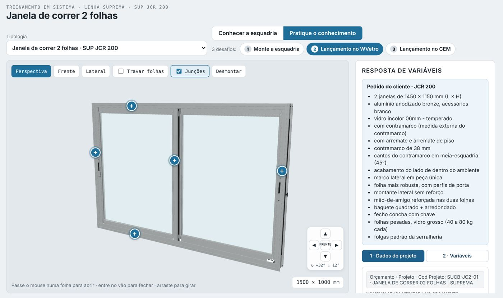
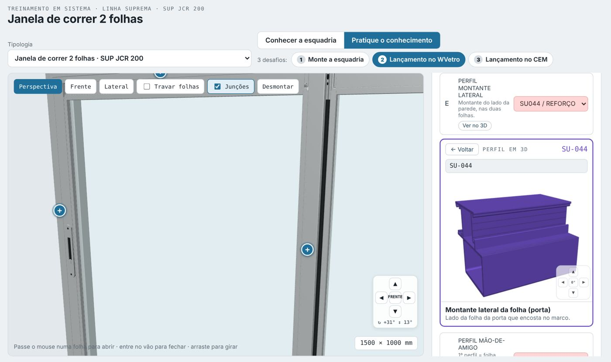
Lançamento no CEM
- Informações Gerais: largura e altura (dentro do mínimo e máximo do fabricante) e o tratamento dos perfis.
- Vidros: marque os filtros do pedido. Com os filtros certos aparece o vidro: toque nele para selecionar.
- Opções de Montagem: toque numa linha para abrir as opções e escolha. O que o pedido não pede fica no padrão.
- Conferir respostas marca em verde e vermelho cada item.

Diagrama de dimensões
Mostra até que tamanho cada mão de amigo aguenta a pressão de vento, com a janela em 3D e o gráfico do catálogo. Toque em Diagrama de dimensões, escolha Linha Gold ou Linha Suprema e toque num diagrama.
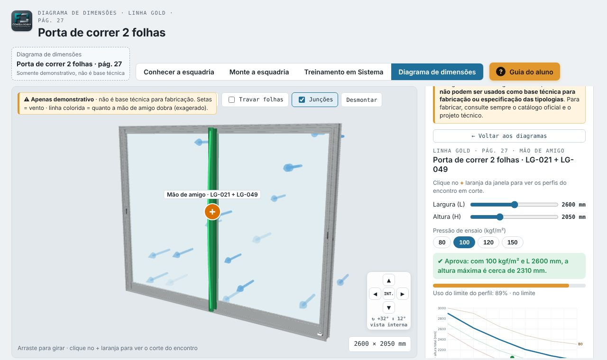
- As setas azuis são o vento empurrando a esquadria.
- A mão de amigo fica verde quando aguenta e vermelha quando passa do limite. A linha colorida mostra ela dobrar (exagerado para enxergar).
- Mude a largura, a altura e a pressão de ensaio (80, 100, 120 ou 150 kgf/m²).
- O painel mostra se aprova ou não aprova, o uso do limite do perfil e a força do vento em kgf.
- No gráfico do catálogo, o ponto é a sua esquadria: abaixo da curva aguenta, acima não.
- O + laranja no encontro das folhas abre o corte com os perfis da mão de amigo encaixados.
- A tabela mostra o Jx de cada perfil: quanto maior, mais o perfil resiste a dobrar e maior a esquadria que ele aguenta.
- Voltar à janela sai do corte. ← Voltar aos diagramas volta para a lista.
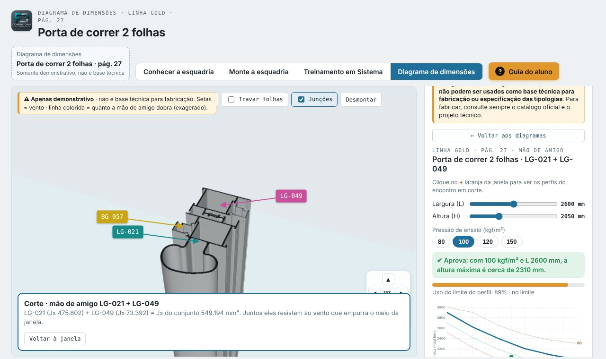
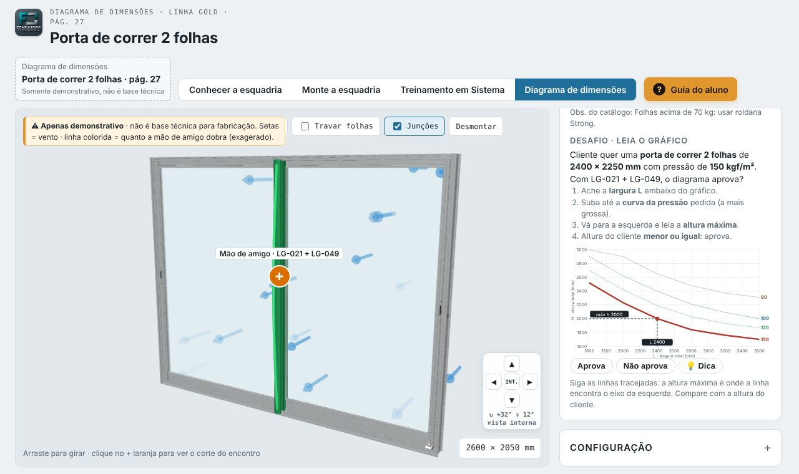
- Leia o pedido do cliente: tipologia, medida e pressão.
- Ache a largura L embaixo do gráfico.
- Suba até a curva da pressão pedida (a mais grossa).
- Vá para a esquerda e leia a altura máxima.
- Altura do cliente menor ou igual: Aprova. Maior: Não aprova. Travou? Toque em 💡 Dica.
Catálogo 3D de perfis
Todos os perfis da Linha Suprema e da Linha Gold em 3D, com as medidas e os desenhos de usinagem. Toque em 📦 Catálogo 3D na barra escura do alto: o catálogo abre em outra aba.
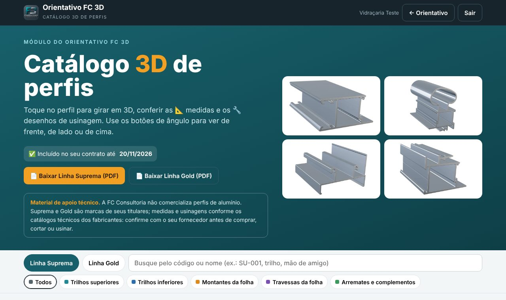
- Escolha Linha Suprema ou Linha Gold.
- Busque pelo código ou pelo nome (ex.: SU-039, trilho, mão de amigo), ou filtre pela função: trilhos, montantes, travessas, arremates.
- Toque no perfil para abrir em 3D. Arraste para girar; role ou pince para dar zoom.
- Use os botões de ângulo: Frente (corte), 3/4, Lateral, De cima e Girar.
- 📄 Baixar salva o catálogo da linha em PDF.
- 📐 Medidas: mostra o desenho do perfil com as cotas em mm, do catálogo do fabricante.
- 🔧 Usinagem: mostra furos, rasgos e recortes do perfil. Quando houver mais de um desenho, use as setas ‹ ›.
- Toque no desenho para ampliar. Toque de novo para fechar.
- A usinagem aparece só nos perfis que têm o desenho no catálogo técnico.
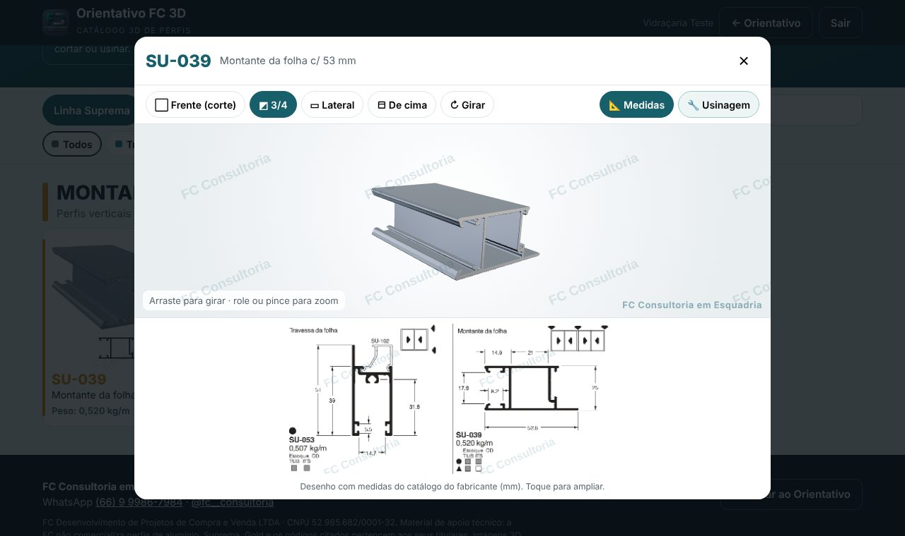
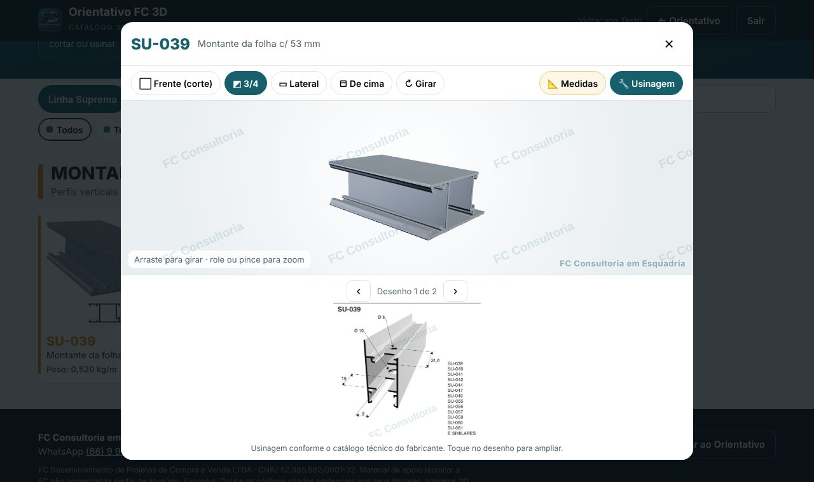
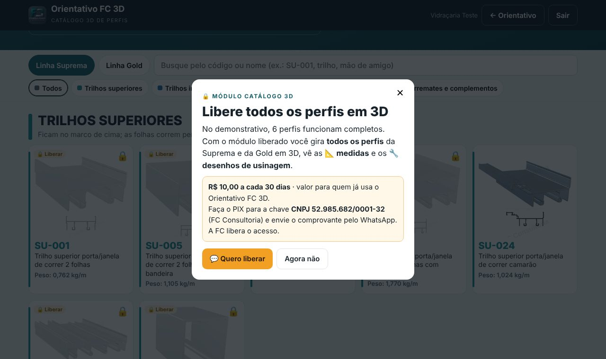
Dúvidas
Esqueci meu código ou a senha
Fale com o gestor da sua empresa ou com a FC Consultoria. O código é trocado pelo painel e você recebe o novo.
Login ou senha não conferem
Confira se não há espaço antes ou depois do login. Maiúscula não importa no login, mas importa na senha.
Diz que meu nome está em outro aparelho
Feche o orientativo no outro aparelho e aguarde 2 minutos. Cada colaborador usa um aparelho por vez.
Meu prazo acabou
Toque no seu nome e em Solicitar mais tempo. A FC recebe o pedido e libera.
A janela 3D não aparece
Atualize a página (no computador, Ctrl + F5). No celular, use o Chrome ou o Safari atualizado.
Meu progresso some?
Não. Fica guardado no seu nome e a sua empresa acompanha o andamento pelo painel.
📘 Catálogos técnicos
O conteúdo técnico do orientativo foi baseado nos catálogos técnicos oficiais das linhas Suprema e Gold (Alcoa). Para consultar o dado original, clique em 📘 Catálogos na barra escura e baixe o PDF da linha. Em caso de dúvida, vale sempre o catálogo do fabricante.
Dúvidas e sugestões
Use o botão Dúvidas e sugestões na barra escura do orientativo. Escreva a sua pergunta e a FC responde ali mesmo, como uma conversa.
Contato FC Consultoria
WhatsApp (66) 9 9986-7984 · Instagram @fc__consultoria
Vídeo tutorial (versão anterior)
Alguns botões mudaram de nome desde a gravação; os capítulos acima estão atualizados. Em menos de 3 minutos você vê tudo funcionando: entrar, girar a janela, peças e perfis, desmontar, cortes e os 3 desafios.